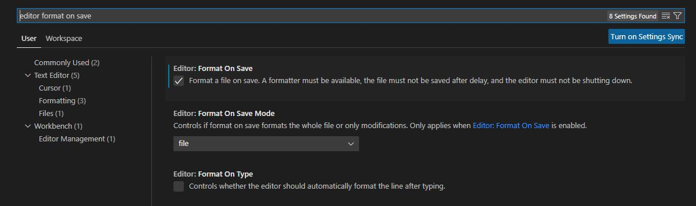
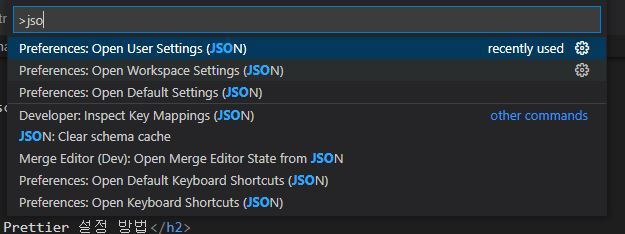

VsCode Prettier 설정 방법
Prettier는 단축키 crtl + s를 누르면 자동으로 정렬이 되는 확장 프로그램입니다.
하지만 간혹 확장 프로그램을 설치했음에도 불구하고 Prettier의 기능이 적용되지 않는 문제가 발생하는데요.
그 문제를 어떻게 해결할 수 있을지 알아보도록 하겠습니다.
1. 설정(Setting) 들어가기

Prettier 설치 후 설정(setting)에 들어간 후 'editor format on save'를 검색, 체크박스에 체크해줍니다.
체크를 했음에도 기능이 적용되지 않을 경우 2번 작업으로 가주세요.
2. json
 F1키를 눌러 json을 검색하면 user setting이 나오는데 이것을 클릭하고 editor.formatOnSave이 true인지 확인해줍니다. false이면 true로 바꾸어줍니다.
3. json-2
두 번째 방법이 먹히지 않을 시 아래의 문구를 setting.json 에 넣어줍니다(2번에서 열었던 user setting!)
"editor.defaultFormatter": "esbenp.prettier-vscode",
"[typescriptreact]": {
"editor.defaultFormatter": "esbenp.prettier-vscode"
},
"[typescript]": {
"editor.defaultFormatter": "esbenp.prettier-vscode"
},